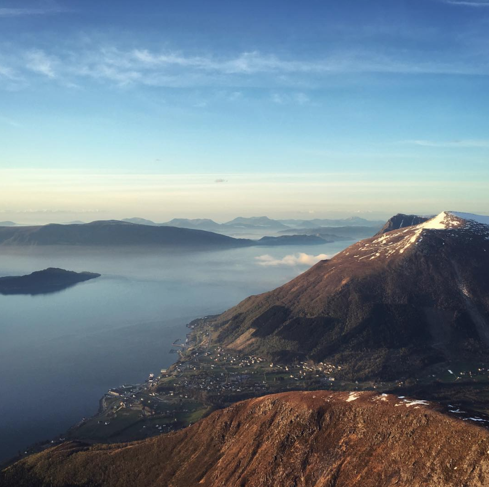

Bergehornet (1024 moh.)

Ein av Vartdals aller vakraste fjellturer, med fantastisk
utsikt heile veien.
Veibeskriving - to mogelegheiter:
1. Sving av E39 mot Remane og Svartesida.
Kjøyr enten opp den bratte svingen opp til Remane, og følg vegen
utan å ta nokon brå svingar til du kjem til eit stort, raudt hus.
Der kan du parkere bilen på den middels store parkeringsplassen.
Gå deretter til fots bak huset, og til opp til høgre for den store låven
til du kjem til eit gjerde. Der følger du råsa oppover til Lisje- og Store
Nakken. Deretter kan du eigentleg angripe fjellet på den måten du sjølv vil.
2. Vel å kjøyr vidare innover Vartdal mot Svartesida til du kjem til ei lita bru.
Ta til høgre etter brua, og følg den noko steinete vegen heilt opp til Vartdal Vassverk.
Der kan du parkere, og følge råsa som går ved siden av rørlinja heilt til du kjem
til drikkevatnet. Deretter kan du sikte deg mot toppen slik du vil, men der er også ei rås
om du klarer å finne den.
Tid: 2-3 timar for den gjennomsnittlege turgåar.
Levandehornet (917 moh.)

Eit majestetisk fjell som ikkje tek for mykje tid, men som til gjengjeld
gir god valuta for "pengane" med flotte vardar og enda flottare utsikt over
nabofjella.
Veibeskriving:
Følg skilting frå E39 innover mot Aarsetdalen. Følg vegen i 3-4 minutt til du kjem til den
deler seg opp i to. Ta der til høgre, og fortsett igjen i nokre minutt til du ser ein
grusveg som går litt oppover. Der kan du anten fortsette framover mot Vassdalen, eller
ta til høgre. Betal bompengane, og kjøyr så longt opp den kronglete vegen til det seier stopp.
Parker bilen, og følg anten råsa som går til høgre frå parkeringsplassen.
Risanakken (454 moh.)

Ein relativt kort tur, som egner seg for både store og små, med ei trollsk
utsikt over Vartdal og fjella på andre sida.
Råsa er koseleg dekorert med skilt og "dyr" som kanskje gir litt ekstra
motivasjon til slitne barn.
Veibeskriving:
Følg skilting frå E39 innover mot Aarsetdalen. Fortsett på vegen
til du kjem til Forsamlingshuset Soltjeld. Der tek du til venstre opp
mot byggjefeltet heilt til du kjem til ein ny høgresving. Ikkje ta svingen,
men parker på den gruslagde parkeringsplassen i svingen.
Derfrå følger du traktorvegen til du kjem til ein kanal, og deretter er det enkelt
å følge skilting vidare mot toppen.
Tid: ca. 25-30 minutt for den gjennomsnittlege turgåar.
På toppen kan man velge å fortsette turen opp mot Sæsshornet og Vardehornet. For
den som fortsatt har meir å gi kan man følge ryggen bortover mot Den Julianske Borg og
Fossholstinden. Mogelegheitene er endelause.